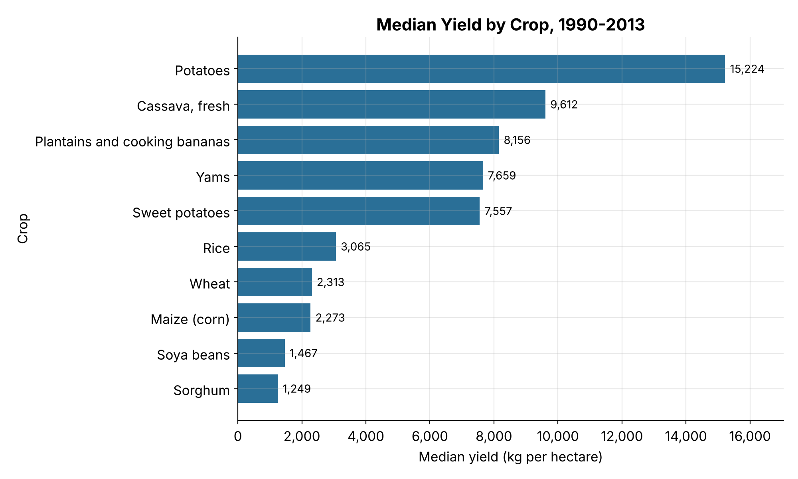
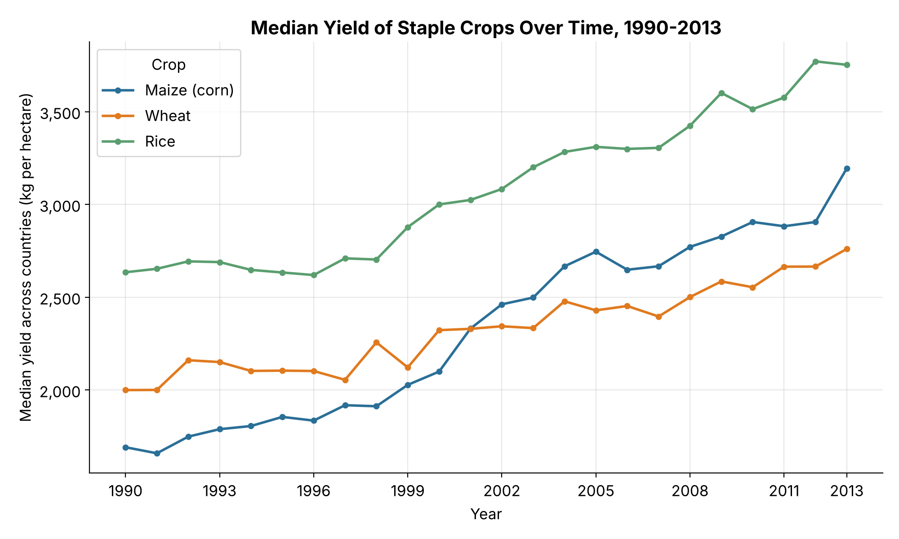
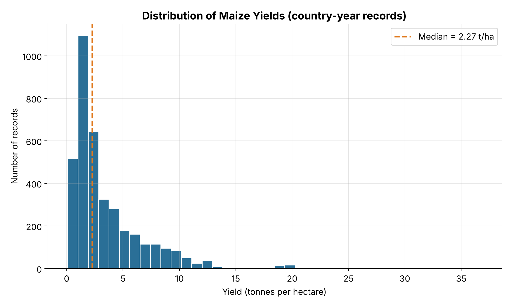
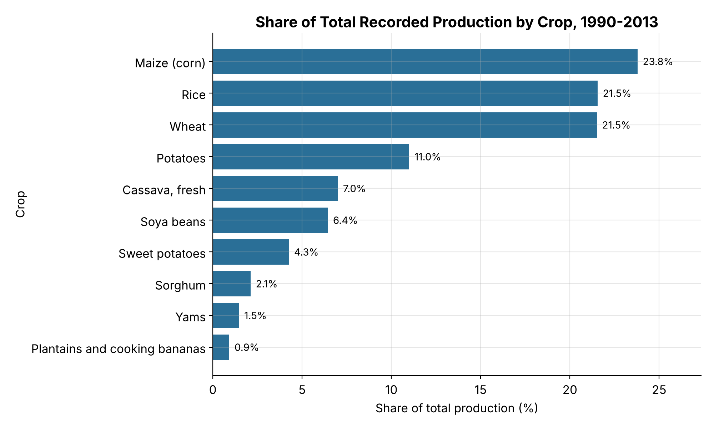
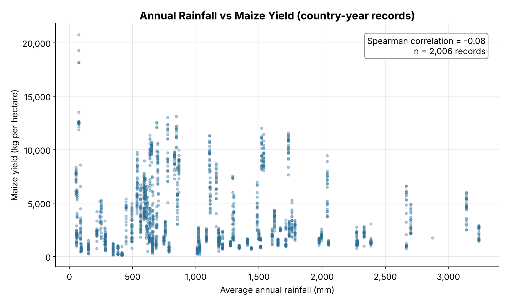

Crop yields across crops, regions and time, and how far rainfall and temperature explain them (FAOSTAT and Kaggle climate data, 1990 to 2013)
| Course | DSA 1080A Programming for Data Science, Future Data Lab, Project 03 |
| Group | [Group name] |
| Members | Kaylah Amani [ID] · Chemi Azikiwe 678189 · Ruvarashe Mandima 677482 · Mike Gichimu 202600181 · Elisha Juma [ID] |
| Repository | [GitHub repository URL], final commit tagged v1.0 |
Food security depends on how much food each hectare of farmland produces, and on how well that output holds up as rainfall and temperature change. Yield per hectare is the most common practical indicator of farm performance, and it varies widely between crops, countries and years. Understanding where yields are low, which crops carry most of the world's production, and whether simple climate measures explain yield differences helps decide where support for farmers and better data collection would matter most.
This project is a reproducible data investigation, not a predictive model. It uses Python, Pandas and Matplotlib to describe patterns in public crop and climate records. The intended users are students, agricultural planners and NGOs who need a clear, evidence-based summary of yield patterns, with Kenya used as a local case study.
Overall objective: understand how crop yield varies across crops, regions and time, and how far climate variables help explain that variation.
Specific objectives: (1) compare median yield across the 10 crops and across UN regions; (2) show how yields changed between 1990 and 2013; (3) measure how rainfall and temperature relate to yield, and show where climate data coverage is weak.
| # | Research question | Answered in |
|---|---|---|
| 1 | Which crops had the highest median yield per hectare? | Notebook 03 Q1, Figure 1 |
| 2 | How did median maize yield vary across regions? | Notebook 03 Q2, Figure 3 |
| 3 | How did recorded rainfall vary across regions, and does rainfall relate to maize yield? | Notebook 03 Q3, Figure 5 |
| 4 | How did yields change over time, globally and for maize in Kenya (1990–2001 vs 2002–2013)? | Notebook 03 Q4, Figure 2 |
| 5 | How did Kenya's maize yield differ between cooler and warmer years? | Notebook 03 Q5 |
| 6 | Which crops make up most of recorded production? | Figure 4 |
| Source | Provides | Licence |
|---|---|---|
| FAOSTAT, Crops and Livestock Products (QCL), Food and Agriculture Organization of the United Nations. Accessed 28/10/2026. | plot_area_ha, production_tonnes, yield_kg_ha | CC BY 4.0 |
Crop Yield Prediction Dataset (yield_df.csv), Kaggle (patelris). Accessed 13/11/2026. | rainfall_mm, pesticides_tonnes, temperature_c, yield_hg_ha | As stated on the Kaggle dataset page |
FAOSTAT is the base table, with one row per country, crop and year. The Kaggle file repeats each country-crop-year up to 22 times (only the temperature changes), so the merge script build_merged_dataset.py first collapses it to one row per country-crop-year. This stops repeated rows from inflating the size of the dataset. Crop and country names are then aligned between the sources, and the climate table is left-joined onto FAOSTAT. Countries the Kaggle file does not cover keep their FAOSTAT row with genuine blanks in the climate columns. No rows were copied or invented.
Loading the merged file with Pandas and checking df.shape gives 25,432 rows × 14 columns, above the required 15,000 × 10. The data covers 204 countries in 26 UN sub-regions, 10 crops and 24 years (1990 to 2013), with 0 duplicate rows and 0 repeated country-crop-year keys. The 14 columns are record_id, observation_date, year, country, iso3, region, crop, plot_area_ha, production_tonnes, yield_kg_ha, yield_hg_ha, rainfall_mm, pesticides_tonnes and temperature_c. Each is described in docs/data_dictionary.md.
The analysis runs in four numbered notebooks that use relative paths, so a reader can restart the kernel and run all of them in order (setup steps are in the README):
01_foundations.ipynb uses Python fundamentals (variables, a list, a dictionary, a loop, a conditional and two small functions) on project examples and proves the 15,000 × 10 size requirement with df.shape, df.columns and df.head().02_exploration.ipynb profiles the raw data with head(), tail(), info(), dtypes and describe(), builds the data dictionary and a quality audit table, and defines two reusable functions, validate_columns() and summarize_missingness().03_cleaning_analysis.ipynb cleans a copy of the raw data, saves data/processed/agri_cleaned.csv and answers five questions using filtering, groupby(), value_counts(), aggregation (count, mean, median, min, max) and date-based period comparisons.04_visualization.ipynb reads the processed file and exports five Matplotlib charts to visuals/.We report medians rather than means because yields are strongly right-skewed. In the raw data the mean yield is 6,874 kg/ha against a median of 3,955 kg/ha. Yield questions use only rows with a positive harvested area and a recorded yield. Climate questions drop blank climate rows only inside the question that needs them. Regional maize medians are shown only for regions with at least 20 records. For rainfall, which repeats across crop and year rows in the source, each country is counted once per region so that it gets equal weight. The rainfall and yield relationship is measured with a Spearman rank correlation, which suits skewed data and does not assume a straight line.
The Week 2 audit found no duplicates, no negative values, no spacing or casing problems in the text columns and no unparseable dates. It did find large, structured gaps in the climate columns, zero-area rows and historical country entities. Cleaning was designed to keep every row and to mark problems rather than remove them.
| Issue | Rows affected | Decision and reason |
|---|---|---|
Missing rainfall_mm, temperature_c, pesticides_tonnes, yield_hg_ha | 12,328 each (48.5%) | Retained as blank and marked with has_weather. The Kaggle table covers only 101 countries. Filling would invent readings, and dropping every incomplete row would leave about 13,100 rows, below the 15,000 minimum. |
Missing yield_kg_ha | 213 (0.8%) | Retained as blank and marked with valid_yield. 212 of these rows have zero production, so no yield can be calculated. |
Missing plot_area_ha | 2 | Retained. Too few to matter, and yield questions already require a positive area. |
Historical labels in iso3 (e.g. USSR, Serbia and Montenegro) | 134 | Set to blank because they are not three-letter codes. The country name stays in country. |
| Text spacing, dates, duplicates, negatives | 0 changes | Text trimmed (0 cells changed). observation_date converted to a date type, with 0 date-year mismatches. 0 duplicate keys and 0 negative values. |
| Data that needs review | 32 / 712 / 346 | Flags added for zero area with positive production (32), a gap of more than 1% between the two yield sources (712, about 5% of matched rows) and former states (346). |
| Outliers (1.5 × IQR rule) | 1,012 / 3,724 / 1,916 / 207 | Yield, production, pesticide and rainfall outliers flagged and kept. Yield and production were checked within each crop, because crops differ naturally in scale. |
We also added yield_t_ha (tonnes per hectare) and period (four six-year groups). With the five review flags and four outlier flags, the dataset grew from 14 to 25 columns.
| Measure | Before | After |
|---|---|---|
| Rows | 25,432 | 25,432 (100% retained) |
| Columns | 14 | 25 |
| Missing cells in the original 14 columns | 49,527 | 49,661 (+134 from iso3) |
| Duplicate rows / repeated country-crop-year keys | 0 / 0 | 0 / 0 |
| Rows with climate data | 13,104 | 13,104 |
The cleaned file passes the size check at 25,432 rows × 25 columns. The full log is in docs/cleaning_log.md.
| Crop | Records | Median (kg/ha) | Mean (kg/ha) | Crop | Records | Median (kg/ha) | Mean (kg/ha) |
|---|---|---|---|---|---|---|---|
| Potatoes | 3,634 | 15,224 | 17,191 | Rice | 2,753 | 3,065 | 3,396 |
| Cassava, fresh | 2,345 | 9,612 | 10,254 | Wheat | 2,909 | 2,313 | 2,820 |
| Plantains | 1,147 | 8,156 | 9,991 | Maize (corn) | 3,804 | 2,273 | 3,623 |
| Yams | 1,304 | 7,659 | 8,483 | Soya beans | 2,154 | 1,467 | 1,540 |
| Sweet potatoes | 2,636 | 7,557 | 9,362 | Sorghum | 2,502 | 1,249 | 1,942 |
Root and tuber crops lead: potatoes have a median of 15,224 kg/ha, about twelve times sorghum's 1,249 kg/ha. All five root and fruit crops rank above every grain and pulse. Much of this gap reflects water content, since a kilogram of fresh potato carries far less dry food than a kilogram of grain, so yields should be compared within similar crop types. For maize, the mean (3,623) is well above the median (2,273), which shows a long tail of high-yield countries.
| Highest regions | Median (kg/ha) | Records | Lowest regions | Median (kg/ha) | Records |
|---|---|---|---|---|---|
| Western Europe | 8,983 | 148 | Eastern Africa | 1,506 | 400 |
| Northern America | 8,312 | 48 | Micronesia | 1,236 | 23 |
| Australia and New Zealand | 7,060 | 48 | Western Africa | 1,187 | 360 |
| Southern Europe | 5,814 | 224 | Southern Africa | 1,143 | 120 |
| Eastern Asia | 4,556 | 120 | Middle Africa | 906 | 192 |
Regional gaps are large. Western Europe's median maize yield is about six times Eastern Africa's and nearly ten times Middle Africa's. Four of the five lowest regions are in sub-Saharan Africa, where maize is a staple food, so the gap matters most where food security depends on the crop. Regions have very different numbers of countries and records, and these medians pool all years.
Counting each country once, the wettest regions are Melanesia (3,142 mm, 1 country), South-eastern Asia (2,702 mm, 3) and Central America (1,976 mm, 5). The driest are Northern Africa (148 mm, 6), Western Asia (332 mm, 8) and Southern Africa (456 mm, 4). Eastern Africa's median is 1,180 mm across 11 countries. Several regional medians rest on one to three countries, so they are rough indications. Comparing these figures with Q2 already suggests that rainfall does not line up with yield. Western Europe (857 mm) has far higher maize yields than wetter Eastern Africa. Figure 5 tests this directly: across 2,006 maize records with climate data, the Spearman correlation between annual rainfall and yield is −0.08, which is effectively no relationship.
| Median yield (kg/ha) | 1990 | 2013 | Change |
|---|---|---|---|
| Maize, median across countries | 1,691 | 3,194 | +89% |
| Rice, median across countries | 2,634 | 3,753 | +42% |
| Wheat, median across countries | 1,999 | 2,760 | +38% |
| Kenya maize, period medians: 1990–2001 (first column) vs 2002–2013 (second column), 12 years each | 1,664 | 1,666 | +2 kg/ha |
All three staples ended higher in 2013 than in 1990, with maize improving most. Kenya stands out: its median maize yield barely moved between the two periods (1,664.40 to 1,666.35 kg/ha). While the typical country nearly doubled its maize yield, Kenya's median in both periods was close to the 1990 cross-country median of 1,691 kg/ha. Because Kenya's figures are 12-year medians and the global figures are single-year medians across countries, this is a broad comparison rather than an exact one. The global line is a median across the countries reporting each year, so it is not a single fixed group of countries, and the comparison does not explain why Kenya stalled.
| Kenya, years split at median temperature (16.66 °C) | Years | Median maize yield (kg/ha) |
|---|---|---|
| Cooler (at or below 16.66 °C) | 12 | 1,685 |
| Warmer (above 16.66 °C) | 11 | 1,641 |
Warmer years had a median yield about 45 kg/ha (roughly 3%) lower than cooler years. The difference is small and rests on only 23 years of national averages, so it is consistent with mild heat stress but does not prove it. Rainfall, inputs, prices and policy also changed over the period, so temperature cannot be separated from these other factors with this data.
All five charts were made with Matplotlib in 04_visualization.ipynb using one shared style and exported as 200 dpi PNG files to visuals/.





| Member | Role | Main contribution |
|---|---|---|
| Kaylah Amani | Week 1 lead | Project scope, dataset selection, repository setup, 01_foundations.ipynb and the 15,000-row / 10-column proof |
| Chemi Azikiwe | Week 2 and Week 5 lead | 02_exploration.ipynb, data dictionary and quality audit; final README, report, slides and reproducibility run |
| Ruvarashe Mandima | Week 2 and Week 5 lead | 02_exploration.ipynb, data dictionary and quality audit; file organisation, final README, report, slides and reproducibility run |
| Mike Gichimu | Week 3 lead | 03_cleaning_analysis.ipynb, processed dataset, cleaning log and the five analytical questions |
| Elisha Juma | Week 4 lead | 04_visualization.ipynb, the five exported charts and the findings summary |
FAO. 2026. FAOSTAT: Crops and Livestock Products (QCL). Rome: Food and Agriculture Organization of the United Nations. https://www.fao.org/faostat/en/#data/QCL. Licence: CC BY 4.0. Accessed 28 October 2026.
patelris. n.d. Crop Yield Prediction Dataset (yield_df.csv). Kaggle. https://www.kaggle.com/datasets/patelris/crop-yield-prediction-dataset. Accessed 13 November 2026.
Hunter, J. D. 2007. Matplotlib: A 2D graphics environment. Computing in Science & Engineering, 9(3), 90–95.
McKinney, W. 2010. Data structures for statistical computing in Python. Proceedings of the 9th Python in Science Conference, 56–61.
Stadler, K. 2017. The country converter coco: a Python package for converting country names between different classification schemes. Journal of Open Source Software, 2(16), 332.
United Nations Statistics Division. Standard Country or Area Codes for Statistical Use (M49). https://unstats.un.org/unsd/methodology/m49/.